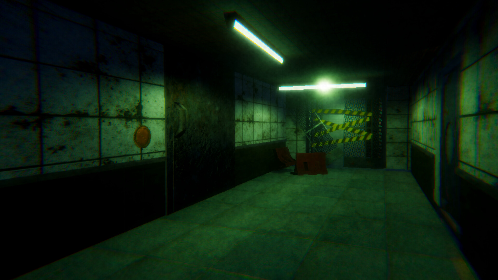

01 / GAMEPLAY
Floor-based checkpoints
A floor is a unit of progress. If a player stops or fails, they can return to that floor and try its puzzle again without replaying the whole hotel.

CASE STUDY 01 / SHIPPED ON STEAM
CHAPTER I / HOTEL MERIDIAN
THE PREMISE
After a journey to Delhi goes wrong, Ronny finds himself in a hotel where corridors shift and entities stalk the floors. Explore, solve an environmental puzzle, and reach the next floor.
We built eight floors, each with its own threat. The challenge was making each floor feel dangerous while giving players enough information to work out what to do.
View on Steam ↗OFFICIAL MEDIA
Official NoteX Studios trailer, streamed from Steam. Open the Steam media gallery ↗
DEVELOPMENT NOTES
01 / GAMEPLAY
A floor is a unit of progress. If a player stops or fails, they can return to that floor and try its puzzle again without replaying the whole hotel.
02 / VISUALS
HDRP lighting, volumetric fog and custom shaders shape what the player sees down a corridor. A readable route makes moments of visual distortion more effective.
03 / ITERATION
Early feedback showed that players could get stuck without enough direction. We improved the hints and fixed a VSync issue in the PC build.